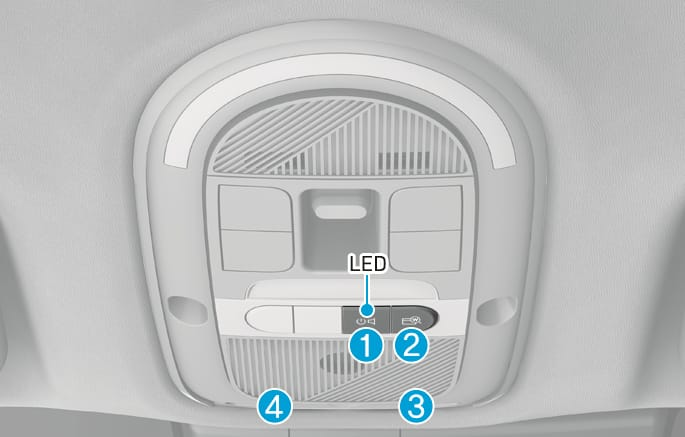

하이패스 시스템 (ETCS)
유료 도로 이용 시 통행료 자동 결제 기능을 제공합니다.

2C_HighPassButton
- 하이패스 시스템(ETCS) 전원 / 볼륨 조절 버튼
- 잔액 확인 버튼
- 카드 분리 버튼
- 프로그램 입력 단자
-
하이패스 기능은 시동이 켜진 상태에서만 작동합니다.
-
ETCS는 Electronic Toll Collection System의 약자입니다.
프로그램 입력 단자를 임의로 조작하지 마십시오. 하이패스 시스템이 오동작할 수 있습니다. 프로그램 입력 단자는 부품 제조 시 하이패스 시스템 단말기의 프로그램을 입력하거나 변경할 때 사용됩니다.